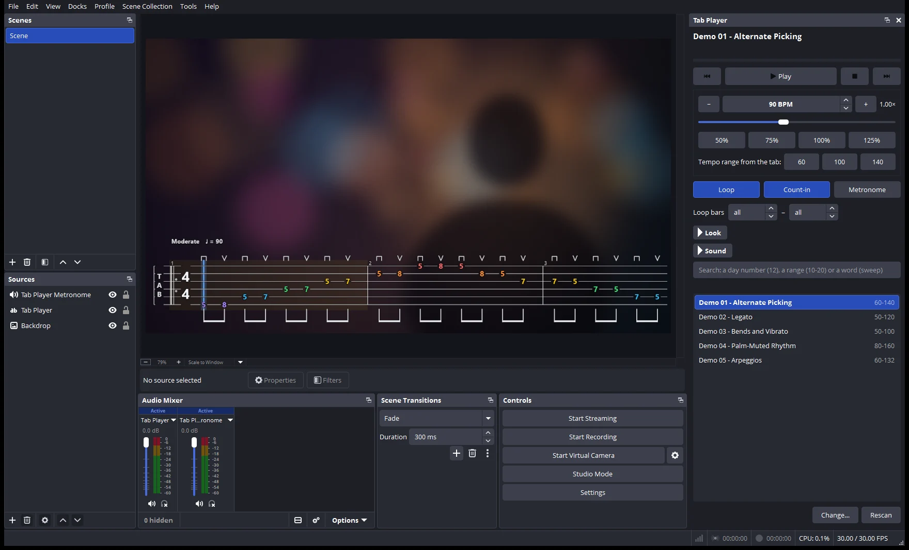
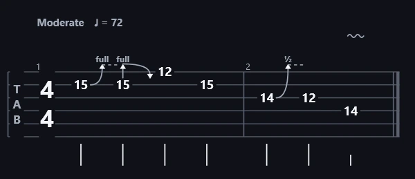
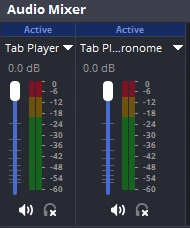
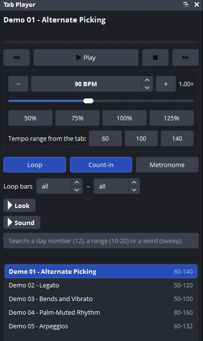

Floating over your video
Turn on Floating tab and the card disappears; a soft outline keeps the notation readable on light and dark shots.
Free plugin for OBS Studio
OBS Tab Player plays Guitar Pro tabs inside OBS. One clean line of tab floats along the bottom of your shot, the cursor follows the music, and the guitar and metronome go straight into your stream on their own faders.
Windows 10/11 · OBS 30 or newer · no admin rights · no account · Apache-2.0
Inside OBS
Everything lives in OBS. No browser source, no web server, no extra app to keep open.

1 2 3
Reads like Guitar Pro
Bends rise to an arrow with the amount, holds are a dashed line and releases come back down, without repeating tied fret numbers. Tempo and swing marks sit above the first bar, and the file's own beaming is kept.
The sound matches the page: shuffle bars swing, a bend carries on through tied notes, hammer-ons, slides, palm mutes, harmonics and let-ring all play.

Mix it your way
The guitar plays through Tab Player, the metronome and count-in through Tab Player Metronome. Set each level, mute one, or send them to different tracks in OBS's Advanced Audio Properties.
Picture and sound share one clock, so the cursor lands on the note in every recording.

No training needed
10-20) or topic, or drop files on the panel.Live demo
The browser edition of the same player. Pick an exercise and press play.
And also
Turn on Floating tab and the card disappears; a soft outline keeps the notation readable on light and dark shots.
Six themes, coloured strings, four fonts, rows or one line. The tab fits whatever size you give the source.
Guitar, 7-string and bass tabs, capo and alternate tunings, every track of a multi-track file.
Drawn once with Direct2D, then only a cursor moves. The sound engine mixes pre-rendered notes.
Tab files are treated as untrusted: bounds-checked readers, hard limits, and millions of fuzzed files under AddressSanitizer.
Apache-2.0, original code, built and released by GitHub Actions with checksums and provenance.
Install
No administrator rights, no account, nothing else to install.
obs-tab-player-…-setup.exe. It offers to close OBS if it's open. Windows may say “Windows protected your PC” because the installer isn't code-signed: click More info › Run anyway.Prefer no installer? The release also has a ZIP with Install.cmd. Five demo tabs are included. On macOS and Linux, use the browser edition.
FAQ
Install the plugin, choose your tab folder in the Tab Player panel and click “Add Tab Player to this scene”. It's a normal OBS source: move, resize and crop it, and the tab fits itself to the size you give it.
Guitar Pro 7 and 8 (.gp), Guitar Pro 6 (.gpx) and Guitar Pro 3–5 (.gp3, .gp4, .gp5). Files from TuxGuitar and other tools that write these formats work too.
Yes. The guitar and the metronome each have a fader in the Audio Mixer and go into recordings and streams, timed to the same clock as the picture.
Yes. In Advanced Audio Properties, set Tab Player Metronome to “Monitor only” or route it to a track you don't stream.
No. The installer copies the plugin into OBS's plugin folder for you and adds an uninstall entry under Windows Settings › Apps.
Yes, that's a design goal. In our tests it costs about 10 µs per video frame and well under 0.1% of one CPU core for the sound, with no dropped frames.
The native plugin is Windows-only for now. The browser edition (an OBS script plus a Browser Source) runs on macOS and Linux and is described on GitHub.